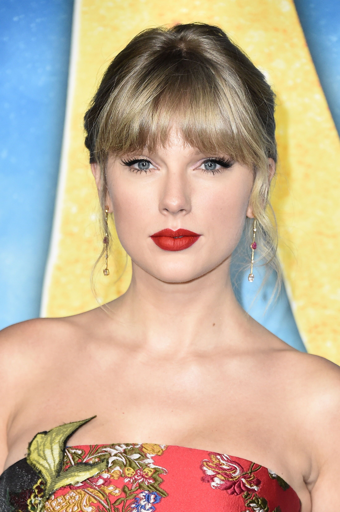
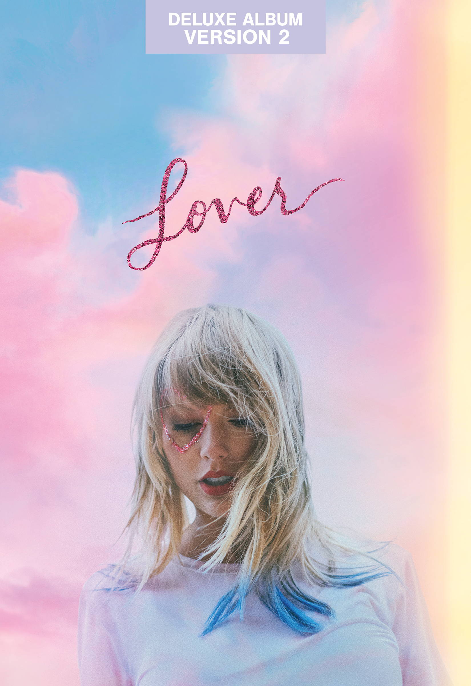
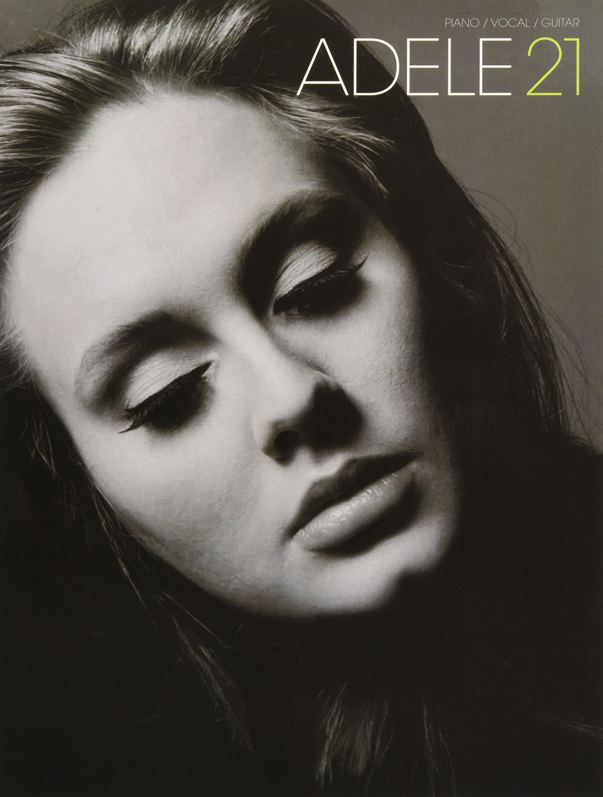
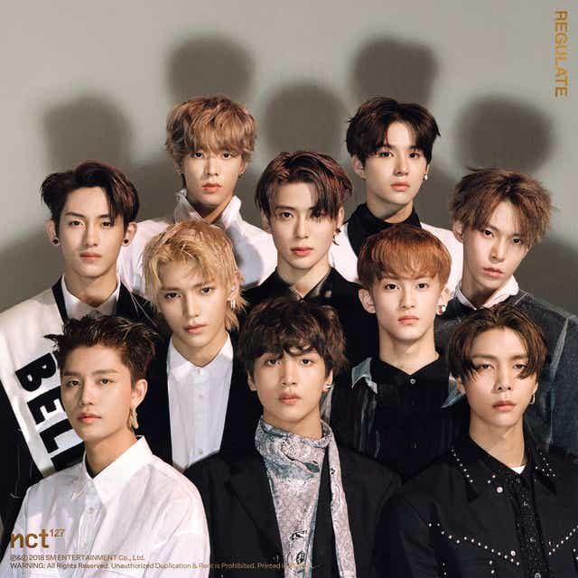

Taylor Swift |
Taylor Swift é uma cantora estadunidense nascida em 1989. Sua música possui vários gêneros e sua escrita narrativa, que é inspirada em sua vida pessoal, possui muita crítica positiva.
Minhas músicas favoritas são:
|
 |
 |
Adele |
Adele é uma cantora e compositora britânica que já vendeu milhões de albuns mundialmente e de ganhou 15 Grammyscomo também um oscar.
Minhas músicas favoritas são:
- Sweetest Devotion
- Love In The Dark
- Make You Feel My Love
|
|
 |
Doja Cat |
Amala Ratna Zandile Dlamini melhor conhecida como Doja Cat é uma cantora, compositora e rapper estadunidense criada e nascida em Los Angeles. Suas músicas ganharam muita popularidade no aplicativo TIKTOK e seu novo album ganhou vários prêmios.
Minhas músicas favoritas são:
- Love To Dream
- Tia Tamera
- Need to Know
|
 |
|
NCT |
NCT é um grupo de KPOP sul-coreano formado pela empresa SM Entertainment e foi primeiro apresentado em Janeiro de 2016. Eles consistem-se de 23 pessoas e são divididos em 4 sub-grupos. Eles são WayV, NCT 127, NCT U e NCT DREAM.
Minhas músicas favoritas são:
- My first and Last
- BOSS
- 7 days
|
 |
|
 |